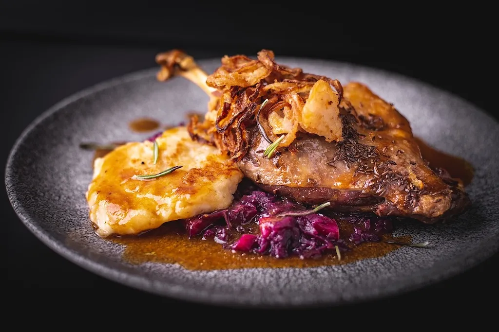

Roasted Duck with Red Cabbage & Potato Dumplings Recipe
18th June 2024
- Main Course
- : 20 mins
- : 2 hours
- : 4 hours 20 mins
- : 3 - 5 people
- : 50€ - 100€
ORIGINS:
When you think of Czech cuisine, what comes to mind? If it’s not the mouth-watering combination of roasted duck with red cabbage and potato dumplings, you’re missing out on a quintessential Czech dining experience. This dish isn’t just food; it’s a journey through Czech history and culture, served on a plate. Let’s dive into how you can bring a taste of Prague to your kitchen with this beloved traditional recipe.
Ingredients
- 12 duck breasts and 2 duck legs, ready to absorb flavors
- A dash of sea salt and black pepper, to taste
- Just under a cup of water (about 0.85 cups)
- 1 apple, for a hint of sweetness
- 1 tablespoon caraway seeds, for that distinct Czech flavor
- 2 plump garlic cloves, peeled and left whole
- 2 onions, diced, laying the foundation of the dish
- 2.8 ounces of rendered duck fat, for richness
- 3 red onions, thinly sliced, adding depth
- 5 bay leaves, for their aromatic presence
- 2 tablespoons cane sugar, for a touch of sweetness
- 2.2 pounds pickled red cabbage, the star of the side dish
- 2.1 cups water, to meld the flavors
- 1 tablespoon vinegar, for a bright acidity
- 2 pounds of potatoes, the base of our dumplings
- 2 cups all-purpose flour, for structure
- 1 and ¼ cup farina, to bind everything together
- 1 egg, to enrich the dough
- ½ tablespoon potato or corn starch, for the perfect texture
- A pinch of salt, to taste, plus more for the boiling water
Instructions
- Wash the duck thoroughly and dab it dry. Gently make incisions in the duck breast skin, ensuring the cuts are superficial and don’t reach the flesh.
- Arrange the duck in a roasting pan or on a tray, and liberally season with salt, pepper, and caraway seeds. Scatter the diced onions around it, then evenly pour the water over.
- Incorporate the apple by slicing it into wedges after coring, and place them around the duck.
- Begin roasting in an oven set to 320°F for about 3.5 hours, keeping the duck covered. In the final half-hour, remove the cover, lavish the duck with a coating of dark beer, and let it roast uncovered until it achieves a rich golden hue.
- Heat the rendered duck fat in a sizable pot. Introduce the red onions, sliced finely, along with a pinch of salt, a dash of pepper, and the bay leaves, and sauté them until they turn a lovely shade of golden.
- Distribute the cane sugar over the sautéed onions and let it melt into them, stirring until fully dissolved.
- Mix in the pickled red cabbage, add water, and a splash of vinegar. Cover and let it simmer gently, stirring occasionally, until the cabbage softens, which should take around 45 minutes.
- Boil potatoes with skins on the day before, then cool (overnight recommended).
- Heat lightly salted water in a pot. Peel and grate the cooled potatoes. In a bowl, mix with flour, farina, potato starch, salt, and an egg to form dough.
- Split the dough in half, rolling each into a cylinder about 2-3 inches thick.
- Boil the cylinders in simmering water for 20-23 minutes. If they stick, gently loosen them.
- Once done, remove with a slotted spoon and cut into slices 1 inch thick.
Notes
Note: Serve your beautifully roasted duck alongside the tangy red cabbage and fluffy potato dumplings. Drizzle with the rich pan juices for a truly Czech dining experience.This dish is more than a meal; it’s a celebration of Czech heritage and the comfort of home cooking. Whether you’re reminiscing about a trip to Prague or exploring Czech cuisine for the first time, this recipe is sure to become a favorite. Enjoy the process, and dobrou chuť (bon appétit)!